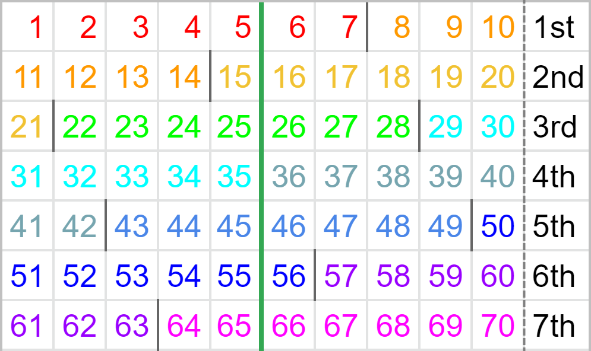
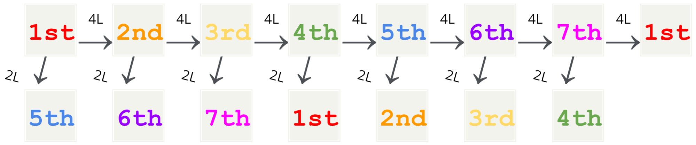
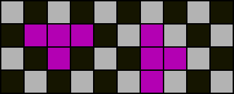
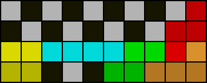
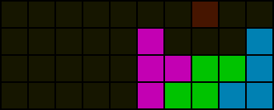

Introduction to Perfect Clear Theory
Last updated 2021/11/18
LLY
Source: https://docs.google.com/document/d/1udtq235q2SdoFYwMZNu-GRYR-4dCYMkp0E8_Hw1XTyg/edit?usp=sharing
Foreword
In modern Guideline Tetris, the art of Perfect Clearing is a relatively niche one. A technique where one clears the field with no residue remaining, akin to the initial state of the game, Perfect Clears (PCs) are difficult to come upon in fast-paced games, even more so when hindered by an opponent. Despite being worth about half a board of sent lines in guideline versus, PCs’ main debut are at the starts of games, where the field is still sterile; any PCs that appear in the midgame are generally attributed to luck.
Furthermore, PCs require more study to reliably execute than simpler opening setups, and without much varying effect; the property of sent lines to also function as ammo for the opponent may backfire for a PC. As such, PCs in versus are said to be unreliable at best, and optional at worst, with many players focusing on midgame and other aspects to improve their play.
Single-player modes provide more chances for PCs to shine. In score-based gameplay PCs often score a large amount; under optimal conditions PCs are more efficient score-wise in relation to other methods. The lack of a harassing opponent allows a smart player to leave the board clean under their own terms. A fairly large portion of scores achieved on the leaderboards are done so with some form of Perfect Clearing.
The true art of Perfect Clearing, however, known as Pure PCs, or Consecutive PCs, is rarer than its hybrid counterparts. What is more commonly seen in the leaderboards often consists of T-spins as an augment, or have T-spins as the main scoring tool with PCs acting as a reset of the board. These techniques sidestep the hardest parts of Perfect Clearing. Yet they prosper, for speed is also a factor; it is easier to perform a simpler technique fast to compensate a drop in efficiency. To that effect, even within those hybrid techniques, a mind for efficiency is not required to excel as long as speed compensates.
Separate from those leaderboards is an enclave. PC Mode, a gamemode where only consecutive PCs are allowed, is the main endeavour and motivation of those interested in Consecutive PCs. In this mode, speed is not important, as virtually the only factor is the number of PCs done in a row; though gravity is doubled to reduce excessive stalling. Efficiency shines here, with research and study geared towards the increase of theoretical and practical success chances, unbounded by most mechanical constraints. Those who top the leaderboard are the ones with knowledge and situational awareness, alongside honed PC vision and stamina to consistently apply it.
The art of Consecutive Perfect Clearing has come a long way since the early days of Tetris. The path of research has been a mountain, with players and researchers of the previous Tetris generations paving the way for many others to reach further. As of writing, there is one player far above the rest on the leaderboard, simply known as hummus, with well over 200 PCs in a row. Players may be close to the point where an actual PC mode run will surpass 300 consecutive PCs, a sequence once worked over as a collaborative study by Shuey and QuestionMark, as an exhibition towards the plausible chances that consecutive PCs were possible for essentially forever, if you knew the pieces that came next.
Research on Consecutive PCs is likely the closest to the theory of Tetris in comparison to other game modes. Due to the lack of opposing players and mechanical requirements, PC mode plays most like a puzzle game as opposed to other modes. Research on the properties and differences of pieces in relation to each other and the field is important to understand why some placements work better. Particularly due to the theoretical aspect of consecutive PC research itself, the ideas and theories are often intimately related to the core of tetromino stacking.
Consecutive PC research will eventually propagate and influence theory on other Tetris game modes and methods. The findings may be applicable to stacking in general, or form a base idea to further research other modes on. Tetris has not been fully solved, and is unlikely to be as more modes and ideas turn up. Thus research shall advance according to those constraints, and further understanding will be obtained. Should the ideas connect, so progress is nurtured.
STICKMANCOMIC
2021/06/05
Preface
This publication is intended for learners of perfect clearing, aspiring perfect clear theorists, as well as Tetris players with a mind for exploring theoretical perfect clear concepts. Emphasis is not placed on practical techniques such as setups but on the tools we have developed to analyze the field and the piece queue in conjunction with modern Tetris mechanics such as holding.
The writer hopes this will help publicise perfect clear theory and establish a standard for the nomenclature and jargon that is used within the lively community JimothyJimothy founded that is PC Gang to which I was invited by Windcatcher.
LLY
2021/06/04
Before Starting
Prerequisites
Familiarity with fundamental mechanics of modern Tetris is expected. Knowledge of basic modular arithmetic is beneficial. Although appreciation of the theory requires only a logical mindset, mastery of the SRS rotation system is recommended for practical solving.
Notation for piece queues
The notation described is consistent with that used by knewjade’s sfinder.
“Tetrominos” (used interchangeably with “pieces”) are any of T, I, L, J, S, Z, and O.
Sets of tetrominos are denoted by a sequence of tetrominos enclosed by a pair of square brackets. Square brackets followed by pN where N is a natural number denotes drawing N pieces randomly from the set enclosed by the square brackets without replacement. Square brackets without the following pN is shorthand for p1.
An asterisk (*) is shorthand for [TILJSZO].
A valid piece queue is composed of single tetrominos and square bracket clauses that may be separated by commas (,) for clarity.
Examples
ILSZor equivalentlyI,L,S,Zspecifies one distinct queue of four pieces.[ILSZ]p4specifies 24 distinct queues of four pieces.T,*p7specifies 5040 distinct queues of eight pieces.
The Typical Perfect Clear (PC)
All ensuing discussion assumes the following conditions:
Uses the 7-bag randomiser
With this mode of random piece generation, pieces are generated in “bags” of seven. Each bag includes all seven distinct pieces (T, I, L, J, S, Z, O) in random order. This is important for us since it grants a certain degree of predictability by periodically ensuring the appearance of all pieces. The term “bag” usually refers exclusively to a 7-bag.
PC runs/Tetris games that generate pieces completely randomly (i.e. the following piece is always independent of the current piece) are known as “memoryless”.
Four line (4L) by default
This is a practical constraint. Assuming single-player gameplay as in PC mode or no garbage is received otherwise, multiples of two lines must be cleared starting from an empty board to achieve a PC. However, as two line (2L) PCs are only rarely possible and may sometimes even be undesirable, PCs are typically done by clearing in multiples of four lines, which is conventionally the maximum number of cleared lines that is permitted by the next completed PC before a consecutive PC run is halted. There exist advanced PC setups such as DPC setups and PC endings to popular openers such as Gamushiro Stacking that exceed four lines, but these are out of the scope of our discussion and can be analysed using the same methods as regular consecutive PCs which will be our main concern. For our purposes, the field beyond the bottom four rows is irrelevant.
Utilises hold
The hold mechanism allows enormous flexibility in rearranging piece order and allows us to consider an additional piece: the first piece from the next PC can be swapped with any piece from the current PC. This can cause the next PC to start with a piece that has a duplicate piece in the rest of the bag. The hold piece or the immediate next piece if there is none when the next PC begins is known as the “saved” piece or “save”.

Checkpoint
- State the next piece that will appear in the queue if the game has just started, your current piece is
I, and the following pieces in the queue areS,Z,O,L,T. - Determine the total number of pieces used in seven 4L PCs.
- The queue is
T,J,L. List all possible orders in which these pieces can be placed. - Determine all possible saves if the queue is
T,J,Land the field is the following:

Counting PCs
There is a loop every seven 4L PCs as exactly ten bags are used. As we will see, considering only the boundaries between bags, which define the character of each PC, the 1st PC is essentially identical to the 8th, the 2nd is to the 9th, and so forth for PCs seven apart. For this reason, PCs are conventionally specified by an ordinal number from 1st to 7th known simply as the “PC number”. Given this number, we can determine how much of the current bag has elapsed and expect the pieces available for the next PC to some extent.
Discussion of individual setups should always mention the PC number. Even though the same shape and constituent pieces may be reused as setups for different PCs, having a different piece distribution can sway PC chances.

For each row in the chart above, the rightmost cell indicates which PC, the numbers indicate how many pieces are used, and the dark lines between numbers mark boundaries between the distinctly coloured bags. The pieces used in a 2L PC precede the green line.
Observe how each PC is divided differently by the boundaries of the bags.

While 4L PCs advance the PC number by one, 2L PCs advance the PC number by four (e.g. after completing a 3rd PC with a 2L solution, the next PC is equivalent to the 7th PC). Although keeping count of PCs would suffice, mathematically, the PC number when the field is empty is given by the formula:
\[ \left[ \left( \text{number of pieces used in complete PCs} \times 5 \right) \mod{7} \right] + 1 \]
Sidenote on the 70-piece loop
The attentive or experienced reader may have noticed that a loop may not strictly be sustained in the case the player does not use all seven pieces in the second bag during the 7th PC and instead uses a piece from the following bag that belongs to the 1st PC. This scenario is known as a “duplicate piece” 1st PC or informally the “8th” PC.
Known 7th PC setups often use the remaining three pieces from the first bag and are designed in mind to only use the seven pieces from the second bag, bypassing such concerns. However, as duplicate piece 1st setups that utilise said saves are being investigated, it may sometimes be favourable to forgo completion of the 70-piece loop.
Checkpoint
- Determine the current PC number if the field is now empty, 14 PCs have been completed, four of which were 2L PCs and the rest 4L PCs.
Exercises
- Explain why openers that use exactly five bags and have a high chance of finishing with a PC (e.g. BT Cannon) can be a viable loop while those that do not but also have a high chance of finishing with a PC (e.g. Gamushiro Stacking uses 20 pieces) cannot be looped on its own.
- Explain why any single variant of tetromino could be missing from the entire piece queue (with holding considered) during the 4th and 6th PCs.
- In which PC(s) is/are a 2L PC with 2
Ipieces and 3Opieces possible? - The field is currently empty. The hold piece is
T, the current piece isJ, and the visible queue shows the next five piecesO,I,O,T,J. What PC(s) could this be?
Parity
Parity rules in the context of PC determine whether a PC is possible based only on the orientation and quantity of the given pieces. We will only discuss the most commonly known parity rules. The reader is encouraged to verify statements that are hereupon presented as fact.
Checkerboard parity

An empty 10x4 field is checkered as shown. For each PC, an equal amount of light cells and dark cells must be filled.
The checkerboard parity rule states that the number of T pieces and number of “odd” line clears together must sum to an even number for any PC. An “odd” line clear is when the total number of empty cells above or below the cleared line is odd. All “boxes” (rectangular areas) with an even horizontal or vertical dimension must obey this rule.

Of all the tetrominos, only the T piece changes checkerboard parity by filling two more cells of either colour than of the other.
 
Notice how light cells become dark cells and vice versa when one line is cleared. On the left is an example of an “odd” line clear, and on the right is an example of an “even” line clear which does not affect checkerboard parity.
Column / vertical parity

An empty 10x4 field is shaded as shown. Again for this colouring, for each PC, an equal amount of light cells and dark cells must be filled. L piece, J piece, and “vertical” T piece placements change column parity. Column parity is not affected by line clears. For most purposes, vertical I piece placements are not considered.
The column parity rule states that the number of L pieces, J pieces, and “vertical” T pieces together must sum to an even number for any PC. All boxes with an area that is multiple of four squares must obey this rule.

A T piece is “vertical” if either rotated clockwise once or counterclockwise once from the original orientation and “horizontal” otherwise. The T piece on the far left is a “vertical” T piece and the T piece in the middle is a “horizontal” T piece. All L pieces and J pieces regardless of orientation and “vertical” T pieces affect column parity by filling two more cells of either colour than of the other.
Exercises
- Determine the minimum total of
L,J, andTpieces necessary to complete any box if at least oneSorZpiece must be used. - Explain why it is impossible to PC a 6x4 box with queue
SZ,[ILSZO]p4. - Determine whether it is possible to save
Tin 2nd PC with queue[JSZO]p4,\*p7. - Given a 4L PC solution exists with queue
ILSZSLIZJTO, determine all possible orientations of theTpiece and if it can be unused. - Capella uses 6-3 stacking and completes 1st PC with a Tetris as shown on the cover page. Determine whether it is possible to complete a 2nd 4L PC with a Tetris.
Piece dependency
Piece dependencies in the context of PC refer to how specific pieces must be placed in certain places for a PC to occur due to the arrangement of existing filled cells. It is advisable to avoid dependencies unless the required pieces are expected to be present.
Field division

The total number of empty cells in completely separate individual regions must be divisible by four for a PC to occur. If a field has separate regions that cannot be rejoined by line clearing and any of those separate regions have a total of empty cells that is indivisible by four, the field is impossible to PC in four lines.
Single piece dependencies

In the above field, the solid cells are placed pieces whereas the shaded cells indicate dependencies. T, I, and O pieces are said to be “fixed” to their respective shaded regions. Notably, while the highlighted T dependency is connected to a larger empty region to the right, any piece that overlaps both would cause the resulting regions to each have a total of empty cells indivisible by four. The logic is similar for the O dependency.

Some dependencies are discernible by parity or by enumeration of all possibilities. Observe how a T dependency is present above.
Queue-dependent piece fixing
In practice, taking into account the actual queue can help decide piece placements.

The grey cells comprise a residue following the TSD of a well-known DPC setup. The queue is *p7 and a PC is 100% possible without considering the following bag. Placing the S piece as shown would fix the L piece which would then also fix the I piece as it becomes the only piece that can fill the one high space in the 6th and 7th columns from the left.
In actuality, the I piece can be placed regardless without jeopardising PC chances.
Sidenote
A piece being fixed in a region does not imply it must occupy any single fixed cell in the region. The diagrams shown are a simplistic representation.
Exercises
- Considering only the bottom four rows, determine whether the following is true:
- Any piece that is at least three high must divide the board.
- Determine whether it is possible at all to PC the following field with any queue:

- Identify all piece dependencies in the following field:

Introduction to setups
Setups are shapes that usually involve the first few pieces in each PC and have been discovered to give good PC chances and saves. As a rule of thumb, good setups should be able to accommodate many piece combinations that could appear in the queue. Even when just freestyling, one should avoid creating irreconcilable dependencies.
Most setups use three to four pieces. It is possible to find solutions to three piece setups assuming visibility of five future pieces in the queue. If a solution cannot be found immediately, it is also possible to transition to known four piece setups. By the fourth piece placed, all pieces that can be used in the PC have already appeared in the queue, so it is advisable to avoid placing more pieces before finding a solution.
When referring to setups, the most reliable and precise way is to simply use fumen as many an effort to devise simple readable notations for setups has resulted in grim outcomes. Mirrored setups may not have the same success rate due to SRS I-spins, and horizontally translated setups may surprisingly have the same problem due to SRS wall kicks: the orientation and positioning of setups are not useless information. In the community, many shapes (not setups) are given curious short English names that can double as embarrassing relics. For instance, a vertical T alone instead of the entire opener can be recognised as the shape “PCO” despite what the abbreviation usually suggests.
Above are 2nd PC setups for the queue [JSZO]p4. The setup on the left has a success rate of 80.00% and that on the right (the left half of which is known as “feet” or “shoe”) has a success rate of 94.21%. Notice how the worse setup fixes two pieces whereas the better setup is far more flexible. In a PC run, the setup on the right would either be used as is or as a three-piece setup by omitting the O or Z piece to increase chances, or even avoided altogether by saving other pieces because of its dissatisfactory chances and saves. The strategy may be different for two-minute Blitz / Ultra runs that emphasise score instead; even top players may sacrifice PC success rate for setups with more patent solutions in order to save thinking time.
In the process of studying setups, it is advantageous to be familiar with their solutions and possible continuations. The term “minimals” refers to any smallest set of solutions for a setup that encompasses all solvable queues. The size of the set can serve as a rough measure of the difficulty of solving the setup. Minimals are not always unique.
What's next?
Serious PC practitioners should invest their time in studying setups for each PC as well as in solving them. Various resources exist:
-
knewjade, one of the all-time greats, has penned a couple of articles regarding PC theory and devised a system for the first two PCs, among other influential achievements, most if not all of which can be found on Github. These are, however, in Japanese.
-
Eminent PC player Nilgiri maintains a list of 1st PC setups available here.
-
FOUR by davdav1233 and cosin307, Tetris Wiki by Hard Drop community, テトリス開幕テンプレ Wiki (Japanese) by yuu, テトリス堂 (Japanese) by shiwehi, and テトリステンプレ集 (Japanese) by biseki, seirei, and mipi, all provide a set of common openers and PC setups and should suffice for players of all skill levels.
-
Your humble writer himself actively maintains a list of setups with graphics, statistics, and Jstris practice modes available at tinyurl.com/perfectclearsetups.
More casual players and budding PC enthusiasts may find themselves training the common opener PCO, for which this tool (Japanese) by sakuramochi84 and davdav1233 may be useful.
If you are not interested in the actual action, PC research may be for you. We use PC finding software to investigate potential setups that can then be used in consecutive PC runs and multiplayer matches alike.
Finally, reap the rewards of your labour and challenge yourself to consecutive PCs at Jstris or KoS. The editorial wishes the readers the best of luck in their future PC endeavours.
Credits
Editors
stickmancomic
Marfung37
Improvements and corrections
AbsurdPotato
torchlight
Exercise inspirations
Ogonek:Macron
PC Gang (hummus, smolfeesh, Speedphoenix, stickmancomic)
{kind=link}
{kind=link}
Figures
util fig (sfinder) by knewjade, GUI by kitsune_fuchi
Special thanks
knewjade, PC Gang, and all who have come before.
Contact
| LLY | tkdlolly@gmail.com |
| stickmancomic | stickmancomic2002@gmail.com |
| Marfung37 | Marfung37#8014 (Discord) |